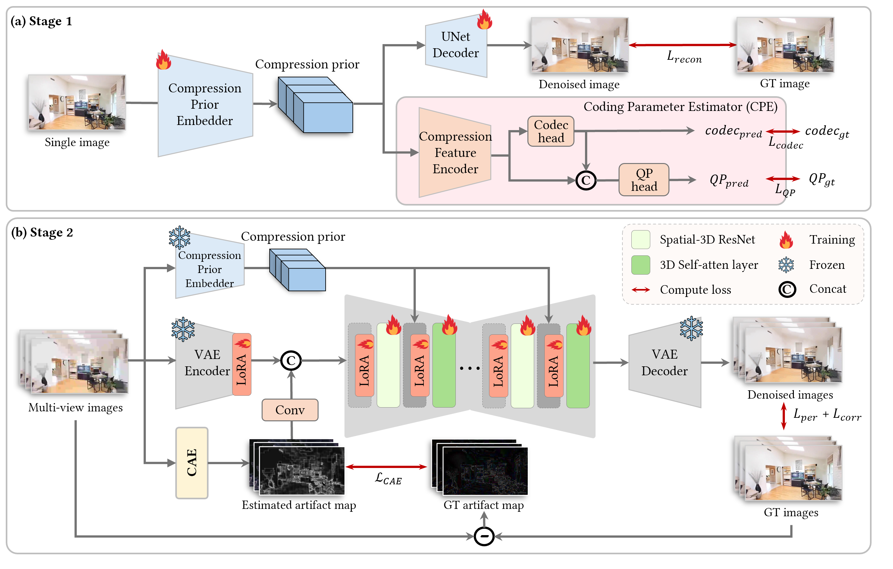

Interactive 3D Result
Abstract
We present a simple and effective framework for interactive 3D visualization and academic result presentation. Our method enables clean demonstration of qualitative results through a web-friendly GLB viewer while preserving the minimal and professional design commonly used in top-tier conference project pages.
Replace this paragraph with your real abstract. Usually 1–2 paragraphs are enough. Keep it concise, technical, and aligned with the paper contribution.
Method Overview
Summarize the core idea of your method here. This section typically explains what problem you solve, what is novel, and why your design is effective.
- Problem formulation and motivation
- Main architectural or algorithmic contribution
- How the method differs from prior work
- Why the resulting 3D output matters

Results
This section is often used for quantitative highlights and qualitative comparisons. You can replace the numbers below with your actual performance.
Qualitative Comparison
Add image grids, videos, or additional interactive models here. Many project pages place comparison figures in this section.
Discussion
Briefly mention the strengths, limitations, and potential applications of your method. This is optional, but useful if your project page is meant to complement the paper.
Example: robust geometry recovery, perceptual quality enhancement, efficient rendering, or better downstream reconstruction.
BibTeX
@inproceedings{yourproject2026,
title = {Your Project Title},
author = {Author One and Author Two and Author Three},
booktitle = {Conference Name},
year = {2026}
}